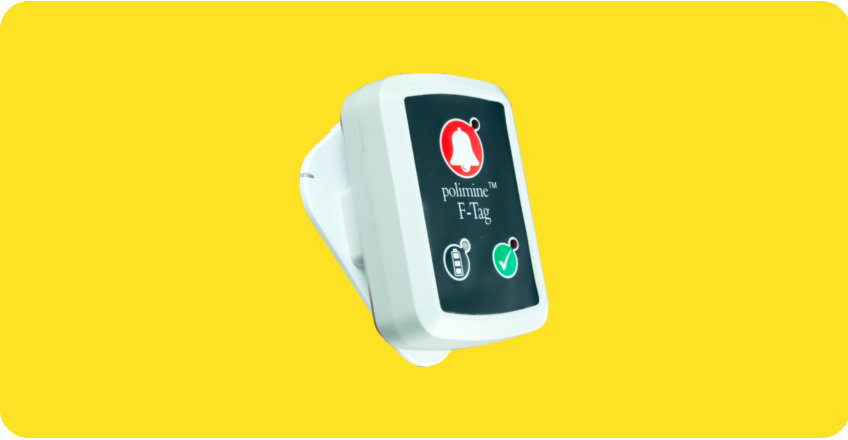

polimine™ yeraltı madenlerinde anlık personel takibi, gaz ölçüm sistemleri gibi yönetmelikler ile zorunlu kılınan sistemlere ek olarak; işletmenizin verimini arttıracak ve tüketimlerinizi optimize edecek otomatik fan kontrolü, araç sinyalizasyon sistemleri, kritik bölge/alan kontrolü gibi ek modülleri bünyesinde barındıran ve topladığı verileri işletmenizin IT sistemleri ile entegre edebilen bir maden otomasyon çözümüdür. Aşağıda polimine™ çözümünün ayrıntılarını açıkladık.
Uzman saha ekiplerimiz tarafından yeraltı madeni şartlarına uygun standartlarda kurulan ortak ağ alt yapısı sayesinde, işletmenizin ihtiyacı olan tüm sistemler tek bir alt yapı üzerinde çalışır. Standard TCP/IP protokolü üzerine kurulu polimine™ çözümü, bu sayede işletmenizi ek alt yapı maliyetlerinden korumuş olur. Kapalı devre kurulan ağ alt yapısı üzerinde kurulu son teknoloji güvenlik duvarları sayesinde dışarıdan gelecek olan saldırılara karşı korumalıdır. Dünyada kabul görmüş hemen her tür otomasyon sistemi TCP/IP protokolleri ile haberleşebildiğinden, gelecekte ihtiyaç olabilecek olan ek otomasyon istekleri aynı alt yapı üzerine kolayca kurulur. Bu sayede haberleşme alt yapı yatırım maliyetlerinizi tek kaleme indirir. Fiber optik kablo teknolojisi sayesinde büyük ölçekli işletmelerin haberleşme sorunlarını ortadan kaldırır. Ses ve Görüntü iletişimini destekleyerek kilometrelerce uzaktaki personellerizle gerçek zamanlı iletişim kurabilmenizi sağlar.
Çalışma ve Sosyal Güvenlik Bakanlığı, zorunlu kıldığı yeraltı personel takip sistemlerinde, yeraltındaki çalışanların yer üstüne kurulacak bir istasyondan maden içindeki anlık konumlarının izlenebilmesini, tehlike anında yeraltı ve yerüstü birimlerinin iki yönlü alarm verebilmesini öngörmüştür.
polimine™ CUI sayesinde maden içerisindeki çalışanlarınızın anlık konumlarını; yer üstüne kurulacak olan izleme merkezinden, işletme içerisindeki herhangi bir başka bilgisayardan ve/veya internet üzerinden dünyanın herhangi bir yerinden izleyebilirsiniz. Gerçek zamanlı haberleşme teknolojisi sayesinde, yeraltındaki acil durumları anında izleyebilir, yerüstünden yeraltına titreşimli ve ışıklı uyarı yollayarak çalışanlarınızı acil durumlara karşı koruyabilirsiniz.
polimine™ CUI Başlıca Özellikleri
Anlık Personel Takibi
Alan Kontrolü Sayesinde Yeraltı/Yerüstü Personel Kümülatif Gösterim
Alan Kontrolü Sayesinde Otomatik Vardiya Takibi
Acil Durum Alarm Takibi
Geriye Dönük Konum Takibi
Geriye Dönük Alarm Takibi
Alarm, Konum, Alan Raporları ve Bu Raporların Excel ve PDF Çıktıları
Özelleştirilebilen Panolar
Tüm Yeraltı Otomasyon Sistemlerinin Tek Ekranda Gösterimi
polimine™ F-Tag
polimine™ F-Tag, üzerinde yer alan Wi-Fi, Bluetooth Low Energy (BLE) ve Hareket Sensörleri teknolojilerini birleştirerek çalışanın maden içerisindeki konumunu, gerçeğe en yakın biçimde belirlemek üzere tasarlanmıştır. Üzerinde bulunan titreşim, ışık ve ses uyarı özellikleri ile yeraltındaki çalışanlarınıza acil durumlarda uyarı yollamanızı sağlar.

Wi-Fi
Bluetooth Low Energy (BLE)
Motion/Hareket Sensörleri
9 Saat Pil Ömrü
Kablosuz Şarj Özelliği
Işıklı ve Titreşimli Uyarı Donanımları
Bileklik, Yakalık ve Bele Takılabilen Opsiyonel Kullanım Kolaylığı
Yeraltı anlık personel takibi sistemleri; Çalışma ve Sosyal Güvenlik Bakanlığı tarafından "MADEN İŞYERLERİNDE İŞ SAĞLIĞI VE GÜVENLİĞİ YÖNETMELİĞİNDE DEĞİŞİKLİK YAPILMASI HAKKINDA YÖNETMELİK" başlıklı, 24.03.2016 tarihli ve 29663 sayılı Resmi Gazete yayını ile 01.01.2017 tarihi itibariyle tüm yeraltı madenleri için zorunlu hale getirilmiştir.
Özellikle grizulu ocaklarda zorunlu kılınan gaz ölçüm sistemleri, polimine™ çözümü ile entegre edilip, aynı haberleşme alt yapısı üzerinden hizmet vererek, işletmenizin alt yapı yatırım maliyetlerini düşürür. Ölçüm yapılacak alanlara kurulacak olan ölçüm istasyonları, verileri merkezi sisteme aktararak gaz ölçüm değerlerinin yerüstü istasyonundan izlenebilmesini sağlar. İstasyonlar, üzerlerinde bulunan gaz seviye gösterimi ve alarm ikaz ekipmanları sayesinde olası bir haberleşme kopukluğunda kendi başına çalışabilmektedir. Kritik gaz eşik seviyeleri aşılması durumunda yeraltındaki çalışanlarınızı otomatik olarak uyarabilir ve en yakın çıkış noktasına yönlendirebilirsiniz. Bu işlem için polimine™ çözümü, anlık personel konumlarından yararlanarak oluşturduğunuz acil durum senaryolarına göre polimine™ H-Tag cihazlarına ışıklı ve titreşimli uyarı yollayabilirsiniz.
polimine™ Gaz Ölçüm Sistemi Başlıca Özellikleri
polimine™ Tam Entegrasyon, Tek Alt Yapı & Tek Ekran
polimine™ WF İle Hazırlanan Görsel Acil Durum Senaryoları
Acil Durumlarda polimine™ H-Tag'e Yollanacak Titreşim ve Işıklı Uyarılar İle Çalışanların Acil Kaçış Bölümlerine Yönlendirilmesi
Standalone / Kendi Başına Çalışma Özelliği İle Merkezi Sistemden Bağımsız Çalışabilmesi
polimine™ CUI sayesinde ihtiyaçlarınıza uygun panoları istediğiniz gibi tasarlayabilirsiniz. Gelişmiş yetkilendirme arayüzü sayesinde tasarladığınız panolarınızı işletme içindeki farklı personellerinize yetkilendirebilirsiniz. Panolarınızı tasarlarken polimine™ CUI üzerindeki IndoorMap, Gauge, Map, AlertBox, PropertyListBox, Counter gibi araçlardan faydalanabilirsiniz.
polimine™ WF sayesinde ihtiyaçlarınıza uygun kuralları iş akışı editörü kullanarak rahatlıkla yapabilirsiniz. Kullanıcı dostu görsel arayüzü sayesinde sistemde olmayan ama ihtiyaç duyduğunuz ek isterlerinizi sürükle-bırak yöntemi sayesinde yaparak zamandan ve teknik işgücünden tasarruf edersiniz. polimine™ gerçek zamanlı tetikleme mekanizması sayesinde varlıklarınızın değişen özelliklerine göre belirlediğiniz kurallar otomatik olarak başlar. polimine™ WF ile İhtiyacınıza özgü alarm senaryoları oluşturabilir, periyodik rapor çıktıları üreterek işletme içinde belirlediğiniz kişilere e-posta olarak yollayabilirsiniz. Ek olarak dilerseniz bulut üzerinden işletme içindeki makine ve ekipmanlarınızı kontrol edebilirsiniz.
polimine™ portalı, API desteği sayesinde işletme içinde ERP,MRP sistemleri ile veri alışverişinde bulunarak sahadan topladığı verilerin bu sistemlere aktarımını kolaylıkla gerçekleştirir. Özellikle tüketim ve alarm gibi kritik verilerin ERP, MRP programlarına aktarımındaki insan faktörünü bu yöntem sayesinde ortadan kaldırır.